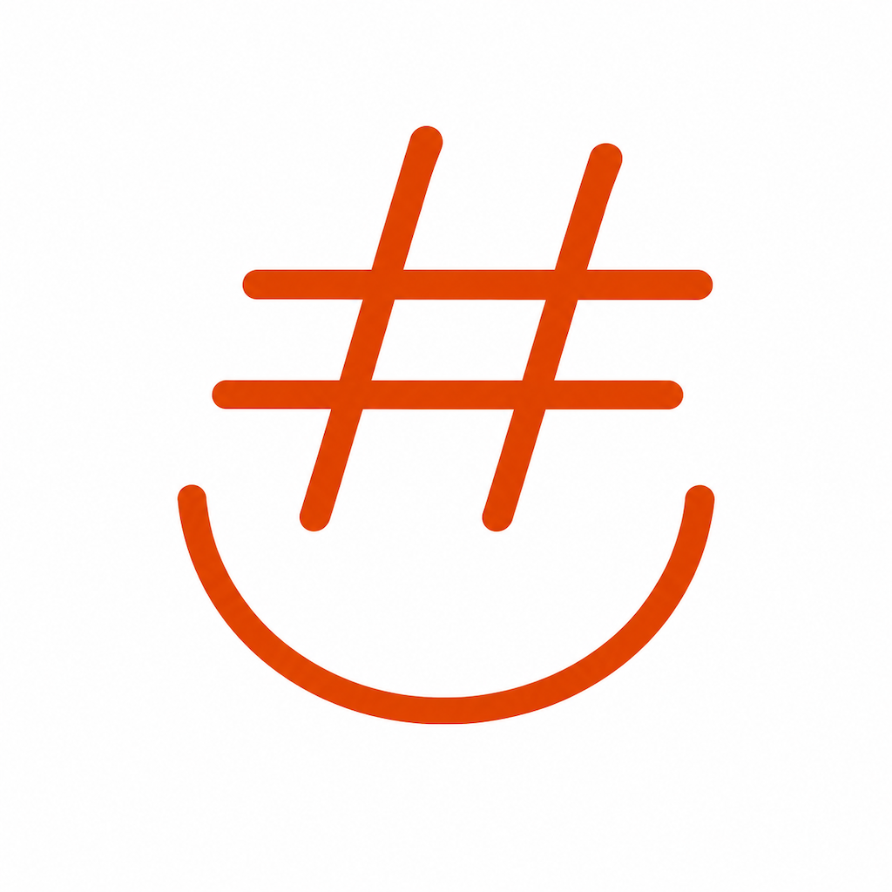

Поддержка Support
XCH2VPN — это VPN-сервис с дополнительными функциями безопасности для Web3. Приложение разработано с фокусом на конфиденциальность и защиту данных. Если вы столкнулись с проблемой — напишите нам. Каждое сообщение читается и учитывается в следующих обновлениях.
Написать на emailXCH2VPN is a VPN service with additional security features for Web3. The app is built with a focus on privacy and data protection. If you run into an issue, please write to us. Every report is read and taken into account in future updates.
Send an emailXCH2VPN создан для пользователей, которые хотят защитить своё интернет-соединение и безопасно взаимодействовать с Web3-сервисами:
Приложение работает как полноценный VPN и без привязки к криптовалютам.
XCH2VPN is built for users who want to protect their internet connection and safely interact with Web3 services:
The app works as a full-featured VPN even without cryptocurrency functionality.
1. Оформление подписки При первом запуске приложение предложит оформить подписку — на месяц или на год. Выберите нужный план, подтвердите покупку через Apple ID (Face ID или пароль). VPN-сервер и ключ доступа настроятся автоматически — вводить ничего вручную не нужно.
2. Подключение VPN На главном экране находится кнопка-логотип. Одно нажатие включает или выключает VPN. Пока идёт подключение, логотип пульсирует. Когда соединение установлено, вокруг него загорается стабильное зелёное свечение. Если в настройках включён режим туннелирования («Исключить российский трафик из VPN»), поверх зелёного круга появляется дополнительное оранжевое кольцо — это визуальный индикатор того, что часть трафика идёт в обход VPN.
3. Restore Purchases Если вы уже подписаны, но приложение не видит подписку (например, после переустановки) — откройте настройки (значок шестерёнки) и нажмите «Restore purchases».
4. Встроенный Web3-браузер Значок браузера открывает встроенный Web3-браузер для работы с dApps. Поддерживается подключение кошелька через WalletConnect и автоматический анализ транзакций.
5. Удаление VPN-профиля В настройках есть кнопка «Удалить VPN-профиль». Понадобится только если нужно начать с чистого листа. При активной подписке профиль пересоздастся автоматически при следующем запуске.
1. Subscription On first launch, the app will offer a subscription — monthly or yearly. Select the plan you want and confirm the purchase via Apple ID (Face ID or password). The VPN server and access key are configured automatically — no manual input is required.
2. Connecting to VPN The main screen features a logo button. One tap turns the VPN on or off. While connecting, the logo pulsates. When the connection is established, a steady green glow appears around it. If tunnel mode is enabled in settings ("Exclude Russian traffic from VPN"), an additional orange ring appears around the green circle — this visually indicates that part of the traffic is bypassing the VPN.
3. Restore Purchases If you're already subscribed but the app doesn't recognise it (e.g., after reinstallation), open Settings (gear icon) and tap "Restore purchases."
4. Built-in Web3 Browser The browser icon opens a built-in Web3 browser for dApp interaction. Supports WalletConnect wallet connection and automatic transaction analysis.
5. Remove VPN Profile In Settings, there is a "Remove VPN profile" button. Needed only when you want to start fresh. While the subscription is active, the profile will automatically recreate on the next launch.
Режим туннеля «Исключить российский трафик из VPN» — если включено, сайты с российскими IP-адресами идут напрямую, минуя VPN (быстрее для локальных сервисов). Весь остальной трафик проходит через защищённый туннель.
Kill Switch «Блокировать интернет при неожиданном обрыве VPN» — рекомендуем оставлять включённым. Если соединение с сервером внезапно потеряется, интернет заблокируется полностью, вместо того чтобы переключиться на незащищённое соединение.
Tunnel Mode "Exclude Russian traffic from VPN" — when enabled, sites with Russian IP addresses go directly, bypassing the VPN (faster for local services). All other traffic goes through the secure tunnel.
Kill Switch "Block internet if VPN disconnects unexpectedly" — recommended to keep on. If the server connection is suddenly lost, the internet is blocked completely, rather than switching to an unprotected connection.
Подключение кошелька Нажмите вкладку «Кошелёк» в правом верхнем углу браузера. Откроется список поддерживаемых кошельков через WalletConnect (включая MetaMask). Выберите свой, подтвердите подключение в самом кошельке.
Выбор сети Слева от адресной строки находится переключатель блокчейн-сети. Поддерживаются: Ethereum, Arbitrum, Base, Polygon, Optimism, BNB Chain.
Проверка транзакций Перед подписью каждой транзакции приложение анализирует её и показывает предупреждение, если обнаруживает риск:
Wallet Connection Tap the "Wallet" tab in the top right corner of the browser. A list of supported wallets via WalletConnect (including MetaMask) will appear. Select yours and confirm the connection in your wallet.
Network Selection To the left of the address bar is the blockchain network switcher. Supported: Ethereum, Arbitrum, Base, Polygon, Optimism, BNB Chain.
Transaction Scanning Before each transaction signature, the app analyses it and shows warnings if risks are detected:
Почему без VPN некоторые сайты и WalletConnect не работают? Инфраструктура WalletConnect и часть Web3-сервисов физически заблокированы для доступа из России и в некоторых других странах. Включённый VPN решает эту проблему автоматически.
Безопасно ли подключать реальный кошелёк? Да. Приложение никогда не запрашивает и не хранит приватные ключи или seed-фразу. Все подписи происходят в вашем кошельке (MetaMask и подобные). XCH2VPN только показывает предупреждения до момента подписи.
Что такое Kill Switch? Это функция, которая блокирует интернет, если VPN-соединение неожиданно обрывается. Ваш трафик никогда не идёт в обход защиты.
Как обновить список фишинговых доменов? База обновляется автоматически каждые несколько часов. Вам не нужно делать ничего вручную.
Why do some websites and WalletConnect not work without VPN? WalletConnect infrastructure and some Web3 services are blocked from Russia and some other countries. The enabled VPN solves this problem automatically.
Is it safe to connect a real wallet? Yes. The app never requests or stores private keys or seed phrases. All signatures happen in your wallet (MetaMask and similar). XCH2VPN only shows warnings before the signature.
What is Kill Switch? A feature that blocks internet access if the VPN connection unexpectedly drops. Your traffic never goes unprotected.
How do I update the phishing domain list? The database updates automatically every few hours. No manual action is required.
Убедитесь, что ваша подписка активна или отменена. При удалении приложения VPN-профиль удаляется из системных настроек iOS. Если подписка активна, при следующей установке профиль восстановится автоматически при нажатии Restore Purchases.
Make sure your subscription is active or cancelled. When you delete the app, the VPN profile is removed from iOS system settings. If the subscription is active, the profile will be restored automatically on the next installation when you tap Restore Purchases.
XCH2VPN предназначен исключительно для законных целей. Пользователь обязуется не использовать приложение для распространения запрещённого контента, преследования, мошенничества или любых других незаконных действий. Создатель приложения не несёт ответственности за действия пользователей и напоминает об обязанности соблюдать законодательство той страны, где приложение используется. Скачивая приложение, пользователь подтверждает взятые на себя обязательства в соответствии с данным пунктом.
XCH2VPN is intended exclusively for lawful purposes. The user agrees not to use the app for distributing prohibited content, harassment, fraud, or any other illegal activities. The app creator bears no responsibility for user actions and reminds users of their obligation to comply with the laws of the country where the app is used. By downloading the app, the user confirms their commitment to the obligations set forth in this section.
Все данные, передаваемые через VPN, защищены шифрованием. Подробнее — в Политике конфиденциальности.
All data transmitted through the VPN is protected by encryption. Learn more in the Privacy Policy.
По всем вопросам, жалобам и предложениям обращайтесь к разработчику: tunnelletter@gmail.com
For any questions, complaints, and suggestions, reach out to the developer: tunnelletter@gmail.com